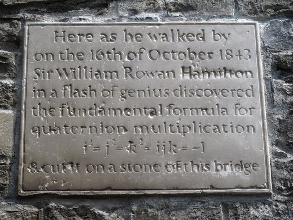
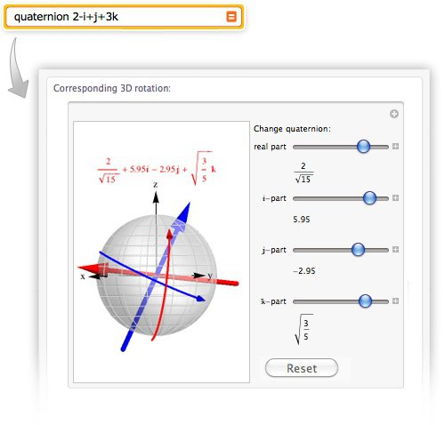

Can quaternions be explained to a nonmathematician?
Sure.
Dimension 1: The Real Numbers
We all (presumably) know that numbers can be added and multiplied. “Numbers” here usually means real numbers, which you may be familiar with from school. They are conveniently visualized as points on a line.
Adding and multiplying numbers isn’t just a mathematical curiosity. We have found that the physical world is very well described by real numbers and their arithmetic. For example, “Force is mass times acceleration” is one of the basic laws of motion, and it requires multiplication.
Addition and multiplication play nicely among themselves, and with each other. We have things like a(b+c)=ab+ac, the distributive law, which together with a host of other laws makes the rational numbers or the real numbers a foundational structure in math, physics, and all of science and engineering.
Dimension 2: Algebra with Pairs
At some point, we hit upon the idea of complex numbers. Complex numbers are usually explained by introducing a new number, i=\sqrt{-1}, but there’s another way to look at things which may seem less odd. You can think of complex numbers simply as pairs of real numbers, like (1,0) or (-17,0.29) or (\sqrt{2},\pi). There is nothing deep or mysterious here: we just take two real numbers, put parentheses around them, and call this “a pair of numbers”.
Adding pairs of numbers is very straightforward. To add (2,3) and (4,5) we simply add the first numbers and then add the second numbers, so we get (6,8).
Why can’t we multiply them in the same way? We sure can, but this turns out to be useless. Multiplying pairs one-by-one creates a structure which doesn’t correspond to anything useful, and from a mathematical perspective it has some really annoying properties, like having zero divisors (this “naive” product of (7,0) and (0,15) is (0,0), so nonzero things can have a zero product. This causes trouble).
On the other hand, there’s a clever way to define multiplication which turns out to have very deep physical, geometric and mathematical significance. It may look a bit mysterious:
\displaystyle (a,b) \times (c,d) = (ac-bd, ad+bc)
but it is really not so bad. The trick is to think of the pair (a,b) as a new kind of number a+bi where i is a symbol whose unique property is that its square is -1. With that understanding, multiplying a+bi and c+di is nothing more than expanding a product as usual, with the distributive law.
With this fancy multiplication, “pairs of numbers” become absolutely essential. They lie at the heart of quantum mechanics, for example. There’s no way to create an understanding of the microscopic world without introducing complex numbers. And modern mathematics – virtually all of it – is unimaginable without complex numbers.
Dimension 3: A Disappointment
Seeing this massive success, Sir William Rowan Hamilton[1] set out to find a way of multiplying triplets instead of pairs. After all, the physical world is 3-dimensional, and just like single numbers represent points on a line and pairs of numbers represent points in the plane, triplets (x,y,z) of numbers naturally represent points in space.
Adding triplets is still done as before, one by one: (1,2,3)+(10,100,1000)=(11,102,1003). Simple. But how should we multiply them?
Hamilton, one of the leading mathematicians and physicists of his time, became almost obsessed with this search. He sought a formula inspired by, or analogous to, that strange (ac-bd, ad+bc) thing which worked so well with pairs. But he couldn’t find it. Years later, he reminisced in a letter to his son:
Every morning… on my coming down for breakfast, your (then) little brother William Edwin, and yourself, used to ask me “Well, Papa, can you multiply triplets?”. Whereto I was always obliged to reply, with a sad shake of the head: “No, I can only add and subtract them.”
Today we know that Hamilton was bound to fail. An algebraic structure of the type he sought does not exist for triplets, for reasons that actually have more to do with geometry (or, more precisely, topology) than with algebra.
But Hamilton did not give up. And then, one Monday morning, on October 16, 1843…
Dimension 4: A Brave New Algebra
On that Monday morning Hamilton took a walk with his wife along the Royal Canal in Dublin, when he had one of those sudden flashes of inspiration – exactly like the ones we just talked about[2]. All of a sudden he saw the answer: forget triplets. Multiply quadruplets instead. Take four real numbers as your basic object, and everything will work like magic. Hamilton literally scribbled the formulas on a bridge, and the event is commemorated in a plaque to this day.

The other part of Hamilton’s inspired insight was no less daring: he realized he has to give something up in order to step into this magical new world. Multiplication of quadruplets is beautiful, clean, and magnificently useful, but it is not commutative. We have to give up on the old law by which A \times B = B \times A.
This was Hamilton’s breakthrough: instead of just a single number i whose square is -1, introduce three of them. i^2=j^2=k^2=-1. We now also need to explain how they multiply among themselves, and it’s a thing of beauty:
ij = k, jk = i, ki = j
but if we flip things around:
ji = -k, kj = -i, ik = -j
With these rules, we can multiply (a,b,c,d) and (e,f,g,h) by writing them like so:
(a+bi+cj+dk)(e+fi+gj+hk)=\ldots
and all you have to do is expand the product as you usually would, remembering the special rules we just laid down. The result seems complicated, but it is fantastically brilliant. Observe that you can’t do it without the a part, since multiplying i or j or k by themselves yields -1, an ordinary real number. There’s no way of creating this scrambled multiplication with triplets. But it works wonders with quadruplets.
A complex number a+bi has a so-called “real part” a and “imaginary part” bi (there’s nothing real about the former nor imaginary about the latter, but those are conventional adjectives). Similarly, a quaternion a+bi+cj+dk has a “scalar” part a and a 3-dimensional “vector” part bi+cj+dk.
Thus was Hamilton’s dream fulfilled: quaternion multiplication actually harbors inside of it important parts of 3-dimensional geometry, as well as physics. Quaternions can be used in electrodynamics, for example. They are also frequently used in computer graphics, as a convenient way to represent and interpolate 3-D rotations.

(Source)
In mathematics, quaternions are a centerpiece of non-commutative algebra, number theory, geometry and many, many other things. The “next” algebra of their ilk, the Cayley numbers or Octonions, already gives up on another property, associativity, and this makes them far less useful. Quaternions may not be as useful as the ubiquitous complex numbers, but they are awesome.
We should really spend time digging deeper into the uses of quaternions in mathematics and physics, but for a quick overview for the mathematical layperson, this may be a reasonable place to pause.
Footnotes
[1] William Rowan Hamilton - Wikipedia
[2] Alon Amit (אלון עמית)'s answer to Is it true that Einstein, rather than using induction or deduction, first had flashes of insight, and only then formulated them logically, formally, and mathematically?